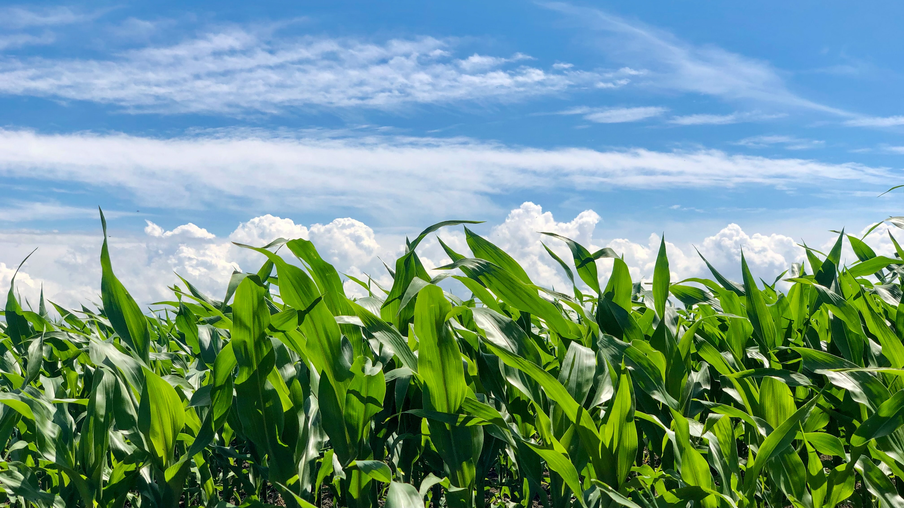

Vers un réseau profond pour la classification des feuilles d'arbres
Publié en février 2022.
Retour sur le projet de classification des feuilles d'arbres par réseau de convolution. Analyse du réseau précédent et amélioration. Cliquez sur l'image pour voir le projet complet.
Prédire la taille des poissons par régression : analyse exploratoire des données (1/2)
Publié en janvier 2022.
Première partie d'un projet plus large sur le thème des régressions. On se concentre ici sur l'analyse exploratoire des données (EDA). Cliquez sur l'image pour voir le projet complet.

Algorithme génétique : évolution d'un champ de maïs
Publié en novembre 2021.
Un projet pour aborder les algorithmes génétiques en prenant l'exemple de la sélection empirique des plants d'un champ de maïs. Cliquez sur l'image pour voir le projet complet.
Classification des maladies des feuilles par un réseau de convolution
Publié en août 2021.
Un projet pour découvrir les réseaux de neurones convolutifs. Cliquez sur l'image pour voir le projet complet.